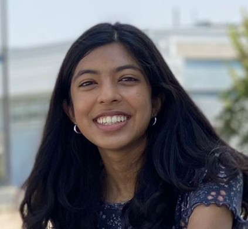

About Me

Hi! I’m Samiksha, a junior in Dublin High School’s Engineering Academy. Throughout my childhood, I have always spent time in nature and explored local ecosystems and observed environmental issues. I would always wonder what I could do to track and generate solutions to these issues, considering that picking up trash and using less plastic could only do so much. Recently, I have discovered the immense capabilities of computer science and engineering in helping the environment. My goal as a DEDA student is to apply my knowledge to problems closer to home like figuring out how to protect local ecosystems and studying extreme climates through remote sensing.
Currently, I am taking courses that have explored engineering from an exploration and specialization perspective. My first two courses, Intro to Engineering Design and Principles of Engineering were interdisciplinary courses that looked at several different areas, from mechanical to electrical engineering. This year, I am in a specialization course, Digital Electronics, where I specifically study digital systems and logic. I have also been taking computer science courses in my free time to expand my skill set and truly figure out what I'm interested in. These past years in high school have mainly been about exploration because I am fascinated by many areas of engineering and computer science. Over the past few months, I've definitely become more interested in chemical engineering, as well as electrical engineering, and curious about how I could use them to solve larger problems.
As a Senior OWL at Lindsay Wildlife Experience and a 2-year member of Gael Force robotics, I have skills as a team leader and team member. At LWE, I supervise a group of younger volunteers in performing husbandry tasks, presentations, and data collection for wild animals. I communicate project ideas regarding conservation issues to staff members and museum visitors on a weekly basis. As a member of 5327S, I assist my captain with building and contribute ideas and time as a team member to be successful. I ensure that I am fulfilling my role and helping other team members as well. In my own time, I have also been working on projects focused on collecting data, especially related to the environment and life sciences.